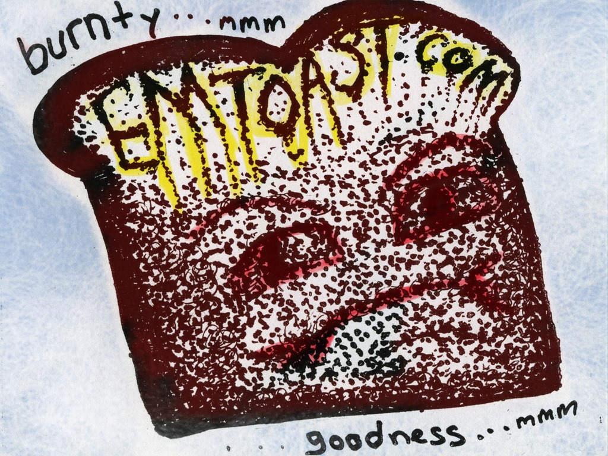

Why Do People Think Blue Teeth Are a Good Idea?
“Ask the Doctor” where readers ask questions of the world renounced general practitioner Dr. Charles V. Fullerton.
Dear Black and Blue: I know. I just got one of those Blueteeth headsets for my Blueberry and it's so cool! The wire is so thin you can't see it! It's unstoppable.
Photo by Aine D 
Related posts
Why Sharp Teeth BJs Are Worse than Not Getting a Rose
"Ask the Doctor” where readers ask questions of the world renounced general practitioner Dr. Charles V. Fullerton Dear Dr. When…

Burnty Goodness Billboard Sneak Preview
This is the sneak preview of the “Burnty Goodness” Billboard to be rolled out later this year. Artwork for this…
You Probably Think This War Is About You
Forget World War III, that's so 80's. The real threat is the Carly Simon Wars. Marily Manson, interviewed on Omaha…

Miracle Gum Grows New Teeth
Chiclets, the candy coated gum once widely available in the US is set to make a comeback after many years…
Comments